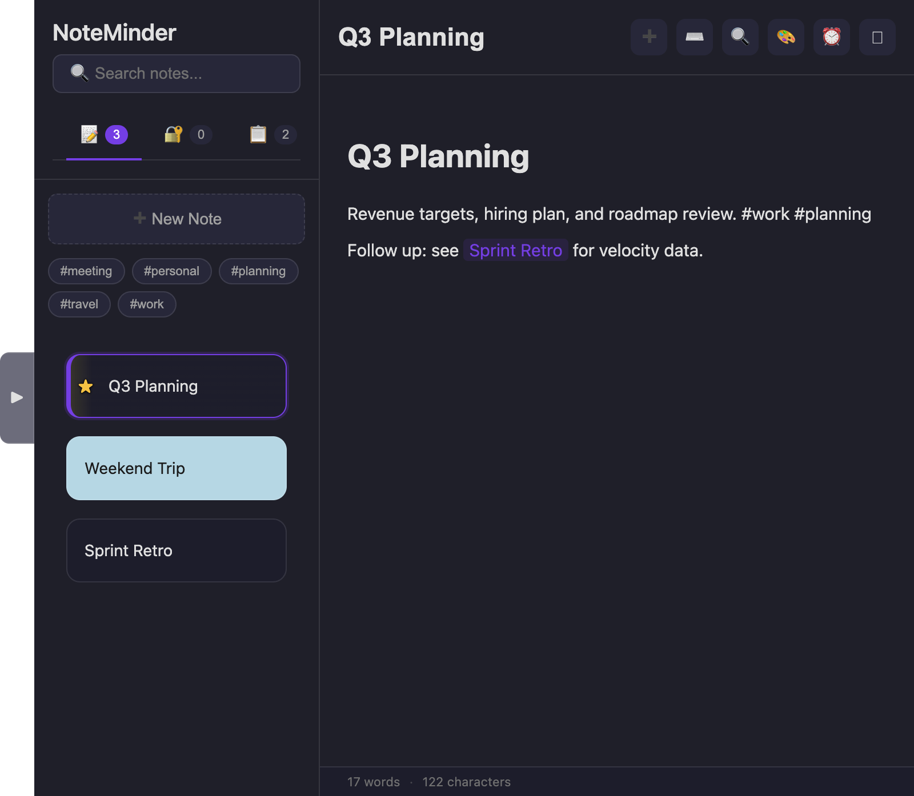
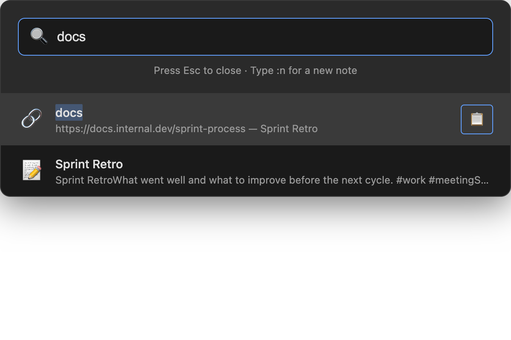
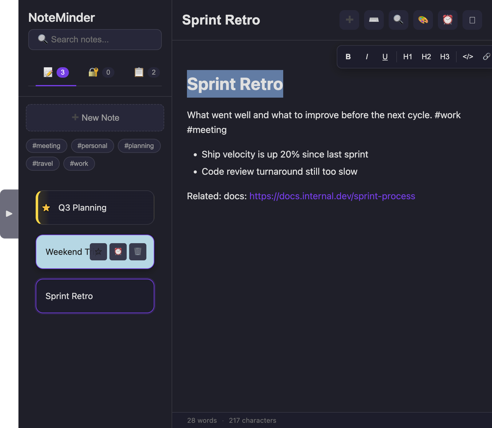
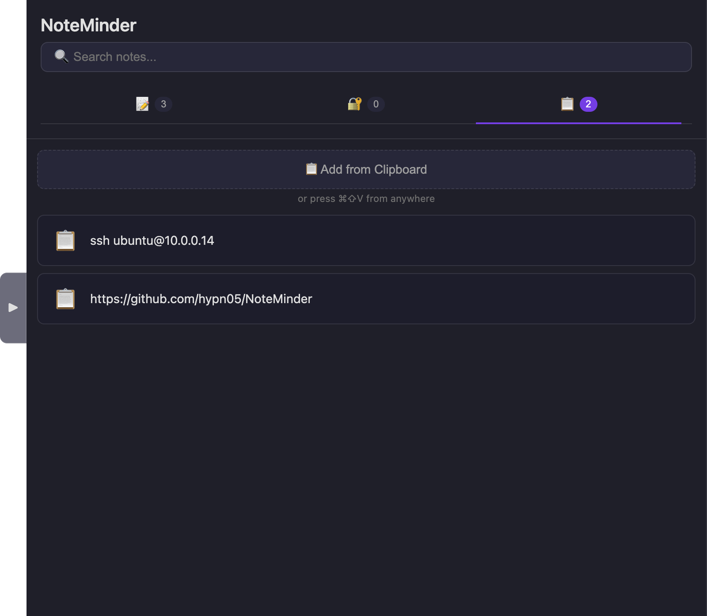
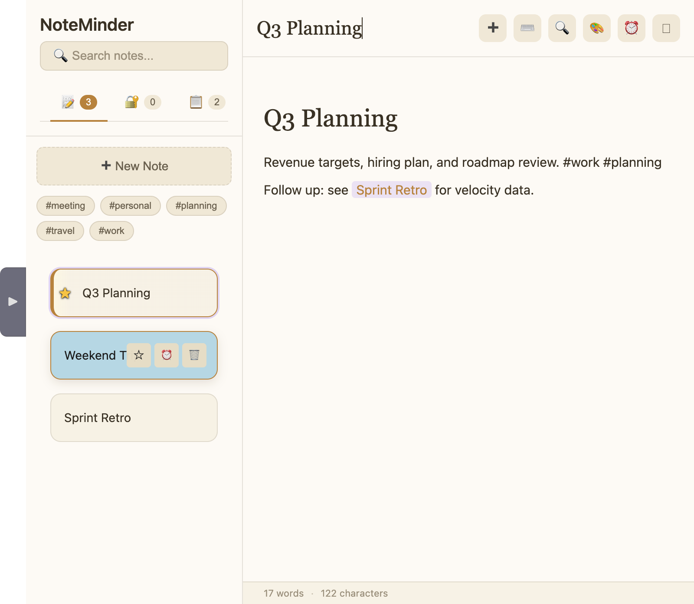

A floating, keyboard-first notes app. Press one shortcut to search, copy a link, or jump into a note — without ever reaching for the mouse.
Free and open source · MIT licensed on GitHub

A Spotlight-style palette that lives outside the app entirely — summon it from any window, on any desktop.

Label a link in any note — select text before inserting it, or just write docs: https://… — and it becomes its own searchable result. Type the label, hit Enter, and the URL is on your clipboard.

No fixed row of buttons eating space. Select text and a small floating toolbar appears right there — Bold, Italic, headings, code, links. Everything else lives in one Insert menu.
One-time, daily, or weekly alerts on any note, with native notifications.
Encrypted password entries alongside your notes, unlocked with Touch ID.
A running, searchable history of things you've copied — grab any of them back later.
Give any note a background color to sort visually at a glance.
Bring in existing .md files, or export your notes as JSON.
A built-in cheat sheet (⌘/) covers formatting, navigation, and markdown-style typing.
Everything below works without touching the mouse. Windows and Linux use Ctrl in place of ⌘, and Alt in place of ⌥.
Same features underneath — Paper trades the dark glass look for something closer to actual paper.

